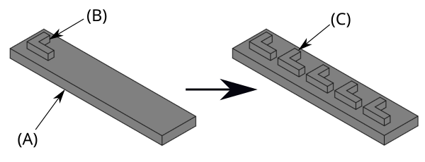
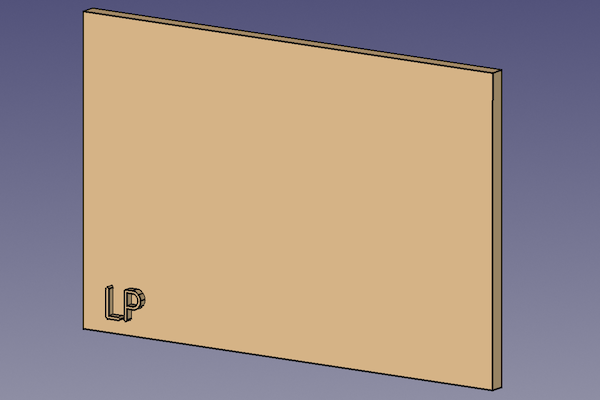
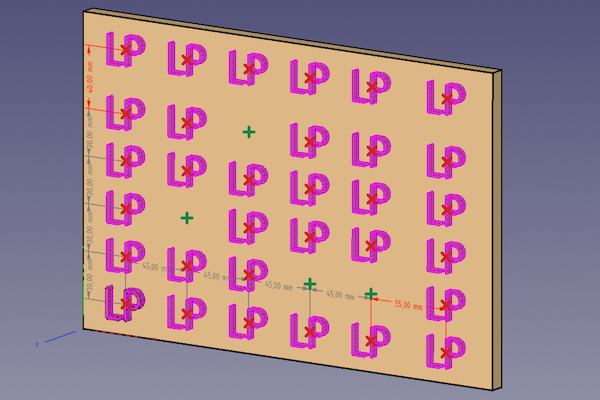
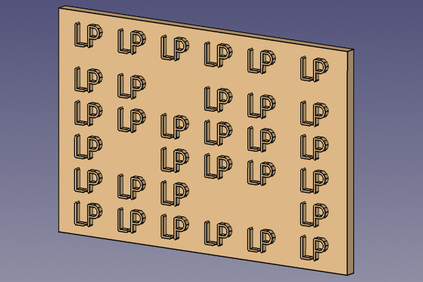

PartDesign LinearPattern
|
PartDesign LinearPattern |
| Menu location |
|---|
| Part Design → Transformation Features → Linear Pattern |
| Workbenches |
| PartDesign |
| Default shortcut |
| None |
| Introduced in version |
| - |
| See also |
| PartDesign MultiTransform |
Description
The PartDesign LinearPattern tool creates a linear pattern of selected features or the active body introduced in 1.0.



An L-shaped pad (B) made on top of a base pad (A, also referred to as support) is used for a linear pattern. The result (C) is shown on the right.
introduced in 26.3: This tool allows to disable individual pattern elements and to edit each offset individually.
  


Existing rectangular base feature with LP-shaped additive feature → "Linear Pattern" preview mode with deactivated elements (red x symbols deactivate elements, green + symbols reactivate elements) and individually offset top row and right column (grey dimensions: general offsets, red dimensions: individual offsets) → Resulting solid (LinearPattern feature)
Usage
Create
- Optionally activate the correct Body.
- Optionally select one or more features in the Tree View or the 3D View.
- There are several ways to invoke the tool:
- Press the Linear Pattern button.
- Select the Part Design → Transformation Features → Linear Pattern option from the menu.
- If there is no active Body, and there are two or more Bodies in the document, the Active Body Required dialog will open and prompt you to activate one. If there is a single Body it will be activated automatically.
- The Linear Pattern Parameters task panel opens. See Options for more information.
- Press the OK button to finish.
Edit
- Do one of the following:
- The Linear Pattern Parameters task panel opens. See Options for more information.
- Press the OK button to finish.
Options
- Choose the mode:
- Transform body: Transforms the whole base feature's shape (default). introduced in 1.0
- Transform tool shapes: Transforms the individual tool shapes of selected features.
- To add features:
- To remove features:
- If there are several features in the pattern, their order can be important. See PartDesign PolarPattern.
- Direction:
- Press the button to reverse the direction of the pattern.
- Specify the direction reference:
- Normal sketch axis: The Z-axis of the sketch (only available for sketch-based features).
- Vertical sketch axis: The Y-axis of the sketch (idem).
- Horizontal sketch axis: The X-axis of the sketch (idem).
- Construction line #: A separate entry for each construction line in the sketch (idem).
- Base X-axis: The X-axis of the Body.
- Base Y-axis: The Y-axis of the Body.
- Base Z-axis: The Z-axis of the Body.
- Select reference…: Select a Datum Line in the Tree View or a Datum Line or edge in the 3D View.
- introduced in 1.0: Specify the length Mode:
- Extent: Enter the Length from a given point on the first occurrence to the same point on the last occurrence.
- introduced in 1.0: Spacing: Enter the Spacing from a given point on the first occurrence to the same point on the next occurrence. For n occurrences: Extent=(n-1)*Spacing.
- Specify the number of Occurrences (including the original feature).
- introduced in 26.3: The length or spacing and occurrence values can also be edited with On-View Parameters in the 3D View.
- Direction 2: Idem. introduced in 1.1
- If the Recompute on change checkbox is checked the view will update in real time.

Properties
See also: Property View.
An PartDesign LinearPattern object is derived from a ... object and inherits all its properties. It also has the following additional properties:
Data
Base
- DataOriginals (
LinkList): A list of selected features. Will be ignored, if the DataTransform Mode property is set toWhole shape. - DataTransform Mode (
Enumeration):Features(default)Whole shape.
Direction 1
- DataDirection (
LinkSub): The first direction of the pattern. This can be a straight edge, a datum line, a sketch axis, or the normal of a planar face. - DataReversed (
Bool): Default isFalse. Reverse the first direction of the pattern. - DataMode (
Enumeration): Selects how the pattern is dimensioned.Extent: Uses the total length from the first to the last instance.Spacing(default): Uses the distance between consecutive instances.
- Data (ReadOnly)Length (
Length): Default is100.0 mm. The total length of the pattern, measured from the first to the last instance.- This is only used when the DataMode property is set to
Extent.
- This is only used when the DataMode property is set to
- DataOffset (
Length): Default is100.0 mm. The distance between each instance of the pattern.- This is only used when the DataMode property is set to
Spacing.
- This is only used when the DataMode property is set to
- DataSpacings (
FloatList): Default is[-1.0, -1.0]. A list of custom spacings between instances. If a value is -1, the global DataOffset value is used for that spacing. The list should have one less item than the number of occurrences. - DataSpacing Pattern (
FloatList): Default is[20.0]. Defines a repeating pattern of spacings for the second direction. For example, a list of [10, 20] will create alternating spacings of 10mm and 20mm. (Experimental and subject to change. To enable this in the UI you can add a boolean parameter 'ExperiementalFeature' in Preferences/Mod/Part). - DataOccurrences (
IntegerConstraint): Default is2. The total number of instances in the first direction, including the original feature.
Direction 2
- DataDirection2 (
LinkSub): The second direction of the pattern. This can be a straight edge, a datum line, a sketch axis, or the normal of a planar face. - DataReversed2 (
Bool): Default isFalse. Reverse the second direction of the pattern. - DataMode2 (
Enumeration): Default isExtent. Selects how the pattern is dimensionedin the second direction.Extent: Uses the total length from the first to the last instance.Spacing(default): Uses the distance between consecutive instances.
- Data (ReadOnly)Length2 (
Length): Default is100.0 mm. The total length of the pattern in the second direction, measured from the first to the last instance.- This is only used when the DataMode2 property is set to
Extent.
- This is only used when the DataMode2 property is set to
- DataOffset2 (
Length): Default is100.0 mm. The distance between each instance of the pattern in the second direction.- This is only used when the DataMode2 property is set to
Spacing.
- This is only used when the DataMode2 property is set to
- DataSpacings2 (
FloatList): Default is[]. A list of custom spacings for the second direction. If a value is -1, the global 'Offset' is used. The list should have one less item than the number of occurrences. - DataSpacing Pattern2 (
FloatList): Default is[0.0]. Defines a repeating pattern of spacings for the second direction. For example, a list of [10, 20] will create alternating spacings of 10mm and 20mm. (Experimental and subject to change. To enable this in the UI you can add a boolean parameter 'ExperiementalFeature' in Preferences/Mod/Part) - DataOccurrences2 (
IntegerConstraint): Default is1. The total number of instances in the second direction, including the original feature.
Part Design
- DataRefine (
Bool): Default isTrue. Refine shape (clean up redundant edges) after operations. - DataFuzzy Tolerance (
FloatConstraint): Default is-1.0. Fuzzy tolerance:- If value > 0: use the value
- If value = 0: leave default value
- If value < 0: determine value
Pattern
- Data (Hidden)Suppressed Positions (
IntPairList): Suppressed instances as zero-based (direction 1, direction 2) indices. Positions outside the current pattern are retained. introduced in 26.3
Transformation
- Data (Hidden)Suppressed Indices (
IntegerList): Indices of pattern instances that are suppressed. introduced in 26.3
Limitations

- Helper tools: New Body, New Sketch, Attach Sketch, Edit Sketch, Validate Sketch, Check Geometry, Sub-Shape Binder, Clone
- Modeling tools:
- Additive tools: Pad, Revolution, Additive Loft, Additive Pipe, Additive Helix, Additive Box, Additive Cylinder, Additive Sphere, Additive Cone, Additive Ellipsoid, Additive Torus, Additive Prism, Additive Wedge
- Subtractive tools: Pocket, Hole, Groove, Subtractive Loft, Subtractive Pipe, Subtractive Helix, Subtractive Box, Subtractive Cylinder, Subtractive Sphere, Subtractive Cone, Subtractive Ellipsoid, Subtractive Torus, Subtractive Prism, Subtractive Wedge
- Boolean: Boolean Operation
- Dress-up tools: Fillet, Chamfer, Draft, Thickness
- Transformation tools: Mirror, Linear Pattern, Polar Pattern, Multi-Transform, Scale
- Additional tools: Shape Binder, Involute Gear, Sprocket, Shaft Design Wizard
- Context menu: Suppressed, Set Tip, Move Object To…, Move Feature After…
- Preferences: Preferences, Fine tuning
- Getting started
- Installation: Download, Windows, Linux, Mac, Additional components, Docker, AppImage, Ubuntu Snap
- Basics: About FreeCAD, Interface, Mouse navigation, Selection methods, Object name, Preferences, Workbenches, Document structure, Properties, Help FreeCAD, Donate
- Help: Tutorials, Video tutorials
- Workbenches: Std Base, Assembly, BIM, CAM, Draft, FEM, Inspection, Material, Mesh, OpenSCAD, Part, PartDesign, Points, Reverse Engineering, Robot, Sketcher, Spreadsheet, Surface, TechDraw, Test Framework
- Hubs: User hub, Power users hub, Developer hub